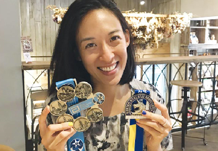

Happy Thursday! 與你分享我上 podcast 聊馬拉松、騎車腦傷、領導、翻轉長照、同理心、勇氣面對人生的起起伏伏
與大家分享我的podcast 採訪，聊小時候超討厭運動、這十年愛上跑馬拉松、2019騎車腦傷後的旅程、如何面對創傷後的情緒、同理心、創立腦傷平台、領導的感想、翻轉長照。跟 Marathon PT 馬拉松治療師
世奇聊的過程，他讓我看見我人生的主題是：勇氣
💪🏼 「面對恐懼、克服障礙」需要勇氣
💪🏼 「自我察覺能力」需要勇氣
💪🏼 「誠實面對自己」需要勇氣
💪🏼 為了目標「擬定計畫」需要勇氣
「勇氣」可以幫助你面對人生的起起伏伏，活的更健康快樂。